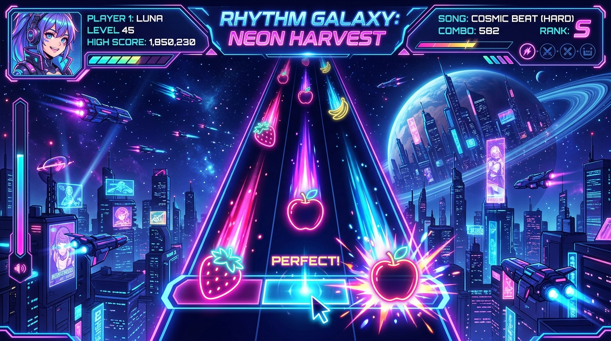

CATCH THE BEAT WITH
NESS TEAM
Wadah bagi para catcher osu!catch untuk mengasah kestabilan, kecepatan reading, dan berkompetisi secara sportif.

NESS TEAM #12517
STRAWBERRY CATCHERS SQUAD
Apa itu osu!catch?
Mode Catch the Beat di osu! menghadirkan pengalaman ritme yang berbeda, unik, dan penuh presisi.
Tangkap Buah Sesuai Irama
osu!catch (Catch the Beat) adalah mode permainan di osu! di mana pemain mengendalikan karakter penangkap buah (catcher) di bagian bawah layar untuk menangkap buah-buahan yang jatuh selaras dengan ritme lagu.
Membaca formasi buah yang jatuh cepat, membedakan jarak antarnota & hyperdash patterns.
Mengontrol piringan catcher menggunakan tombol panah/mouse dengan timing dash yang pas.
Fruits (Buah Besar)
Komponen utama combo dan skor. Kehilangan 1 buah akan memutuskan combo (Break).
Bananas (Spinner Drop)
Jatuh saat bagian spinner lagu. Menambah bonus poin ekstra secara masif.
Hyperdash (Red Glow)
Memberikan dorongan kecepatan kilat otomatis untuk menjangkau buah terjauh.
Tiga Pilar Utama NESS TEAM
Tiga fondasi utama yang dibina oleh seluruh anggota NESS TEAM untuk mencetak performa terbaik.
Reading Mastery
Kemampuan membaca pola nota, mengantisipasi ritme map bertempo tinggi, serta membaca struktur stream, jump, dan anti-jump patterns dengan tenang dan teliti.
- High Approach Rate (AR10+)
- Dense Stream Visualizing
- Hidden (HD) Reading
Precision Movement
Eksekusi pergerakan catcher dengan presisi milimeter. Penguasaan tombol dash (shift) untuk menghentikan posisi karakter tepat di bawah jatuhnya buah tanpa berlebihan (overshoot).
- Hyperdash Timing Control
- Edge-catching Precision
- Tap-dash Fluidity
Consistency & Acc
Fokus mental dan ketahanan stamina sepanjang maraton lagu. Menjaga akurasi 99%+ dan kepercayaan diri dalam turnamen atau sesi ranking ladder osu!.
- Full Combo (FC) Stamina
- Tournament Nerve Control
- 99.5%+ High Acc Target
Mini Game osu!catch
Gerakkan catcher (piringan) menggunakan Mouse atau tombol panah ⬅️ ➡️ / A / D. Tahan Shift untuk Dash!
osu!catch Arcade Mini Game
Uji refleksmu! Tangkap buah strawberry, apel, dan banana untuk mengumpulkan combo tertinggi. Hindari melewatinya!
Anggota & Top Catchers
Beberapa talenta & anggota aktif di lingkungan NESS TEAM.
Ness Leader
Team FounderSpesialis map AR10+ & Hyperdash stream. Fokus mempererat komunitas osu!ctb Indonesia.
ReadingDemon
Core MemberPenguasai movement presisi dan fast-dash spacing. Sering aktif bermain multiplayer room team.
CatchGod
Tournament PlayerRaja stamina maraton map & spinner banana catcher. Pengalaman di berbagai turnamen osu!ctb.
Resources & Rekomendasi
Rekomendasi skin osu!catch dan map latihan untuk meningkatkan akurasi dan reading.
Rekomendasi Skin osu!catch
Skin yang bersih (clean) membantu memperjelas penglihatan batas piringan catcher dan jatuhnya buah tanpa distracted visual effects.
NESS Minimalist CTB v2
Clean fruit sprites + sharp catcher plate
Chocopa CTB HD
High visibility glow fruits
Map Latihan Reading & Stream
Kumpulan beatmap osu!catch resmi dengan struktur pattern bervariasi untuk latihan pemula hingga advanced.
Hyperdash Precision Practice
Focus: Fast red-glow dash catching
Anti-Jump & Reading Training
Focus: Spacing reading & AR10 timing
Pertanyaan Umum (FAQ)
Informasi seputar cara bergabung dan kegiatan di NESS TEAM.
Siap Untuk Menjadi Bagian Dari NESS TEAM?
Bergabunglah dengan ratusan catcher lainnya. Kembangkan potensi ritmemu di osu!catch sekarang!